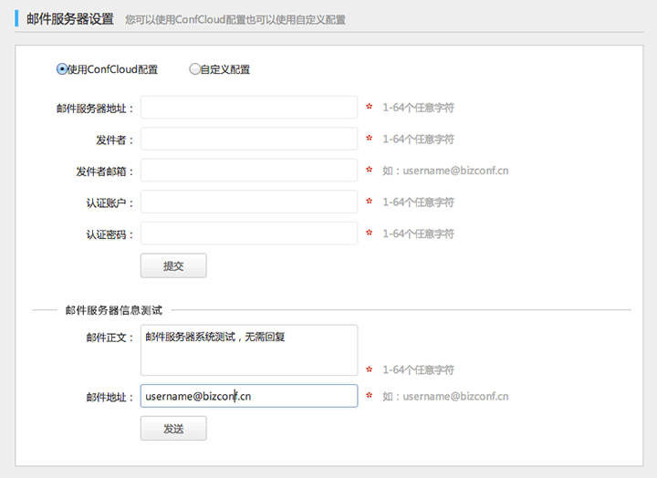
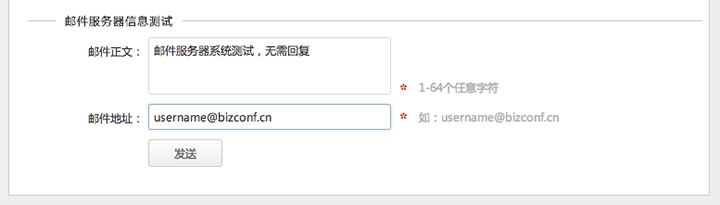

当企业有自己的邮件系统，可以对整个站点配置自己企业邮箱。发送邮件通知时，显示的为自己公司的邮件地址。
1. 选择“系统配置>邮件服务器设置”。
邮件服务器地址：支持域名或IP都可。
发件者：显示发件者的名称。
发件者邮箱：显示发件者的邮箱。
认证帐户：邮件服务器的认证用户名。
认证密码：邮件服务器的认证密码。
2. 点击“提交”。
1. 选择“系统配置>邮件服务器设置”。
2. 点击“发送”。
邮件正文：可以输入任意邮件内容，默认为：邮件服务器系统测试，无需回复。
邮件地址：可以输入任意可用的邮件地址，默认为：超级企业管理员的邮件地址。
如果配置成功，则可以在自定义的邮件地址中收取邮件，否则系统提示配置失败。